{kind=link}
{kind=link}

Проблема - левый состав, возможно, уедет первым
Сигналы — очень полезные устройства для управления движением поездов. Они помогают избежать аварий на железнодорожных путях, по которым движется более чем один поезд.
Для проведения любых операций с сигналами, нужно быть в режиме установки сигналов. Откройте меню Строительство железной дороги и нажмите на значок сигналов. Полное описание панели сигналов см. Панель сигналов.
В режиме установки сигналов:
Новая панель сигналов позволяет заранее выбрать тип сигналов для установки, таким образом избавляя от необходимости прокликивать разные типы сигналов. Для открытия этой панели, удерживая ctrl нажмите на кнопку установки сигналов, или в меню опций Расширенных Настроек во вкладке "сигналы" пометьте опцию "включить меню сигналов" (включено по-умолчанию). Для более старых версий: в файле openttd.cfg опцию enable_signal_gui установите как true.
Семафоры (старые электро-механические сигналы, широко использовались до середины 70-х)
| 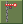 | Блок-сигнал |
| 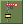 | Въездной пре-сигнал |
| 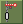 | Выездной пре-сигнал |
| 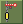 | Комбинированный пре-сигнал |
| 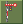 | Маршрутный сигнал разрешающий (пускает в противоположную сторону) |
| 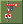 | Маршрутный сигнал запрещающий (не пускает в противоположную сторону) |
| 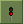 | Блок-сигнал |
| 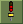 | Въездной пре-сигнал |
| 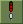 | Выездной пре-сигнал |
| 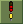 | Комбинированный пре-сигнал |
| 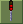 | Маршрутный сигнал разрешающий (пускает в противоположную сторону) |
| 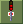 | Маршрутный сигнал запрещающий (не пускает в противоположную сторону) |
| 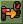 | Инструмент преобразования сигналов — превращает любой сигнал на путях в тот, что выбран на панели сигналов. См. соотв. главу в статье Установка сигналов |
| Инструмент выбора плотности сигналов. С его помощью можно указать, через какое расстояние будут автоматически размещаться сигналы. См. соотв. главу в статье Установка сигналов |
Блок-сигналы, несмотря на название, основываются на принципе участков-блоков, а не на блокировании поездов, как можно было подумать. Блоком считается участок пути между двумя сигналами, либо между сигналом и тупиком. Если блок занят поездом, блок-сигналы на въезде на этот блок-участок будут красными. В противном случае - зелеными.
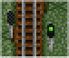
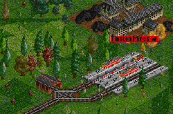
Двухсторонние сигналы на погрузочной станции
Двусторонние сигналы используются на тех путях, где требуется двухсторонне движение по одному и тому же пути. Наиболее очевидное их применение - на "тупиковых" станциях, на которые поезда заезжают и которую покидают через одну и ту же сторону. На примере справа такие сигналы направляют поезд на незанятый путь. Также именно они препятствуют поезду покинуть станцию, если блок-участок занят.
Если поезд может выбрать несколько направлений, на каждом из которых есть двухсторонние сигналы, то он поедет по пути с зеленым сигналом. Если же все сигналы красные, то поезд поедет самым простым путем и будет ждать зеленого сигнала если упрется в красный.
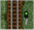
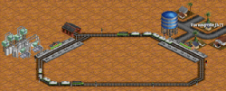
Кольцевое одностороннее движение
Односторонние сигналы позволяют поездам двигаться только в одном направлении. В примере на картинке, сигналы принуждают поезд двигаться кругами в одном направлении. У этих сигналов есть преимущества: они обеспечивают эффективность въезда и выезда поездов, и позволяют иметь больше чем один поезд на одном и том же пути.
При использовании односторонних сигналов убедитесь, что они все направлены в одну и ту же сторону. Проследить за первым поездом, идущим по вашему маршруту, оборудованному односторонними сигналами, до самого конца маршрута будет хорошей идеей.
Кликните на двусторонний сигнал, чтобы превратить его в односторонний. Кликните еще раз, чтобы сменить его направление (при этом сигнал останется односторонним). Третий клик сделает сигнал опять двусторонним.
Если поезду приходится выбирать между несколькими путями, оборудованными односторонними сигналами, он будет выбирать только из тех путей, сигналы на которых позволяют поезду двигаться к своей цели. Тоесть, поезд будет так же, как и в случае с обычными сигналами, выбирать путь с зеленым сигналом или останавливаться у красного и ждать зеленого сигнала на путях, сигналы которых позволяют поезду двигаться вперед, и никогда не выберет путь, односторонний сигнал на котором не пропустит поезд, независимо от его цвета - красного или зеленого. В этом разница между односторонними и двухсторонними сигналами.
Проблема - левый состав, возможно, уедет первым
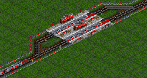
Решение проблемы при помощи пре-сигнала
Изображение справа показывает ситуацию, где доступ к станции управляется обычными сигналами. Когда имеется свободная платформа на станции - входящий состав всегда направляется к ней. Однако расмотрим ситуацию, когда все платформы заняты, как на "проблемном" скриншоте. Все входные сигналы красные, и в таком случае подъезжающий состав выбирает простейший путь - прямо. Но предположим, что состав на той платформе будет стоять, в то время как с соседней платформы отправляется поезд, освобождая ее. Входящий состав тем не менее уже выбрал путь и будет ждать освобождения выбранной платформы, в то время как другая платформа свободна. Значит нужно остановить входящий состав до того, как он начнет делать выбор между двумя красными сигналами. Для этого необходимо использовать пре-сигналы.
Пре-сигналы - это сигналы, которы принимают решения основываясь не только на занятости блока после них, но и на показаниях установленных далее сигналов. В частности, въездной пре-сигнал открыт тогда, и только тогда, когда сигнал на выходе из последующего блока зеленого цвета.
Въездной пре-сигнал открыт до тех пор, пока есть хотя-бы один открытый выездной сигнал в конце блока. В противном случае - закрыт. Это предотвращает попадания поездов в ограниченный въездным пре-сигналом блок при отсутвии свободного выхода из него. Обратите внимание, что депо имеет встроенный двухсторонний сигнал (он работает как въездной пре-сигнал в системе пре-сигналов).
Если нет никаких сигналов, определяемых как выездные после въездного пре-сигнала, он ведет себя как обычный сигнал. Это удобно для двунаправленных пре-сигналов, где только одно направление нуждается в функциональности пре-сигналов.
Выездной пре-сигнал ведет себя таким же образом как нормальный сигнал, но он необходим для корректной работы въездных и комбинированных пре-сигналов.
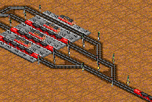
Станция с одним въездным, двумя комбинированными и четырьмя выездными пре-сигналами
Третий тип пре-сигналов называется комбинированным пре-сигналом, поскольку является попросту одновременно въездным и выездным пре-сигналом. Его использование позволяет строить большие каскады пре-сигналов, как это показано на изображении справа.
Чтобы устанавливать пре-сигналы, выберите соответствующую кнопку на панели сигналов.
Для ранних версий: Сначала разместите обычный сигнал. Затем, удерживая ctrl прокликивайте его до тех пор, пока не будет выбран требуемый пре-сигнал.
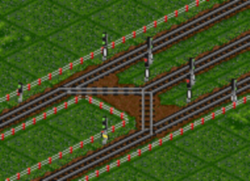
Проблема с пре-сигналами
Есть два новых типа сигналов. Эти сигналы позволяют поездам зарезервировать путь через блок до следующего сигнала, прежде, чем войти в блок. Если поезд хочет войти в блок, и есть возможность резервировать свободный путь в этом блоке, маршрутный сигнал разрешает поезду вход в блок, даже если другие пути в этом блоке используются в то же самое время.
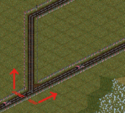
Y-блок между тремя блок-сигналами
Вот пример в виде иллюстрации.
У нас есть блок с Y-образным перекрестком, заключенным между тремя обычными сигналами. Правый путь занят поездом. Другой поезд подходит с нижней ветки и хочет пойти по левой ветке пути. Обычные сигналы полагают, что все пути в блоке заняты, даже если, как в данном примере, левая ветка свободна.
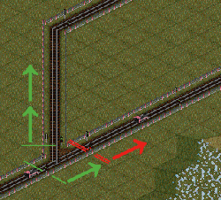
С двумя дополнительными сигналами Y-блок был разделен на три блока: правый, левый и развилку
Решение состоит в том, чтобы расколоть данный блок на меньшие блоки, добавляя сигналы после развилки.
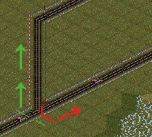
Y-развилка между маршрутным сигналом и двумя блок-сигналами
Тем временем, маршрутный сигнал разрешает поезду с нижней ветки входить в Y блок после проверки возможности резервирования пути — левой ветки. Нет необходимости разбивать данный блок на более мелкие блоки, т.е. не нужны дополнительные сигналы после развилки.
Есть две вещи, которые необходимо учитывать при использовании данных сигналов:
Эти два новых типа сигналов ведут себя немного отлично от стандартных сигналов. По-умолчанию маршрутные сигналы красные, и показывают зеленый только в том случае, если поезд может зарезервировать себе путь до следующей точки безопасного ожидания, которыми являются: депо, сигналы и тупики. Задняя сторона маршрутных сигналов безопасной точкой не считается, и пути резервируются "через" нее.
Лицевая сторона любого сигнала определена как безопасная точка; устанавливать сигналы сразу после развилок нежелательно, тем не менее можно свободно ставить их перед развилкой. Это потому, что поезд может подолгу стоять не загораживая развязку только находясь перед ней, в то время как простой поезда перед сигналом, стоящим сразу после развилки, создает на ней затор, как показано на картинке внизу. В этом главное преимущество этих сигналов перед стандартными сигналами OpenTTD, которые нужно было ставить сразу перед и после развилки, создавая ситуации в которых стоящий на развилке поезд полностью ее блокирует.
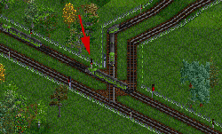
Сигнал, указанный стрелкой, является плохой точкой ожидания, так как поезд, находящийся в ней, блокирует путь для поезда сверху, который мог бы быть свободен. На этой картинке также есть вторая плохая точка ожидания.
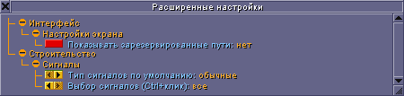
Расширенные настройки YAPP
Доступны три новые опции в расширенных настройках, связанные с маршрутными сигналами.
Первая опция — подсветка зарезервированных путей. Эта опция полезна для устранения неполадок железной дороги, связанных с использованием маршрутных сигналов, так как зарезервированный участок полностью отображается.
Вторая опция определяет тип устанавливаемых сигналов по-умолчанию - обычные блок-сигналы, маршрутные обычные или маршрутные односторонние сигналы.
Третья опция определяет, какие сигналы доступны через ctrl-прокликивание.
Также есть еще несколько связанных с сигналами опций, которые недоступны через меню Расширенных Настроек. Более подробно об этом изложено в статье Расширенные опции и возможности маршрутных сигналов.
Ниже изложены некоторые примеры систем путей с использованием маршрутных сигналов. Не рекомендуемые новичкам, Расширенные системы маршрутных сигналов, также доступны в соответствующей статье.
Этот простой перекресток теперь имеет куда большую пропускную способность.
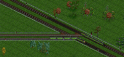
Простой перекресток для поездов не длиннее трех клеток. Обратите внимание на обычные сигналы.
На этой станции поезда могут использовать обе платформы, прибывая из обоих направлений.
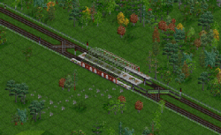
Простая станция.
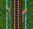
Семафоры по функциональности ничем не отличаются от обычных сигналов. У них попросту старинный внешний вид.
До версии 0.6.0 семафоры в OpenTTD можно было создать только удерживая ctrl во время установки сигналов. Начиная с версии 0.6.0 семафоры будут по-умолчанию создаваться вместо светофоров до определенного года, по умолчанию 1975, который можно настроить. Эта опция находится в меню Расширенных Настроек в секции Строительство / Сигналы и называется "Строить семафоры старого стиля".
После установки семафора, прокликивание его с зажатым ctrl изменяет тип его сигнала, или пре-сигнала. Вы также можете обновить семафоры до светофоров с помощью инструмента "преобразовать сигнал" на панели сигналов, удерживая ctrl кликая на семафор. Простой клик поменяет семафор на выбранный в панели сигналов тип сигнала а не обновит его!
Семафоры имеют весьма длинную историю в жизни железной дороги. Задолго до появления электрических лампочек, семафоры использовались для обозначения направления на железнодорожных стрелках, показывая что путь после стрелки безопасен. Семафоры — простые устройства, механически управляемый железнодорожный знак, поднимаемый или опускаемый для обозначения занятости или свободности пути.
В оригинальной игре Transport Tycoon, железнодорожные сигналы создавались в виде семафоров вплоть до 1975 игрового года, после которого создавались светофоры. В игре Transport Tycoon Deluxe эту функцию убрали, но позже вернули в патче TTDPatch, и в игре OpenTTD.
Имейте ввиду, что сигналы — не идеальный способ направить поезда по разным направлениям. Сигналы нужны, чтобы не дать поездам столкнуться друг с другом, и чтобы помочь им выбрать из нескольких путей, ведущих к их точке прибытия. Если вы хотите вручную направить поезд по определенному маршруту, то лучше используйте контрольные точки.
{kind=link}
{kind=link}
{kind=link}
{kind=link}
{kind=link}
{kind=link}
{kind=link}
{kind=link}
{kind=link}